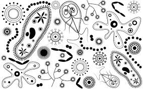

Мікробіологія
Мікробіологія - це наука про мікроорганізми, які занадто малі, щоб їх можна було побачити неозброєним оком. Вона вивчає їхню будову, розмноження, роль у природі та застосування у житті людини.
Види мікроорганізмів
- Бактерії: одноклітинні прокаріоти, які можуть бути корисними або шкідливими.
- Віруси: неклітинні форми життя, що заражають клітини і викликають хвороби.
- Гриби: еукаріотичні організми, як-от дріжджі та пліснява.
- Протисти: одноклітинні еукаріоти, які живуть у воді та ґрунті.
Користь і шкода
Мікроорганізми можуть бути і корисними, і небезпечними:
- Корисні: допомагають у ферментації, очищенні води, виробництві ліків.
- Шкідливі: викликають інфекції, псують продукти та руйнують матеріали.
Застосування мікробіології
Мікробіологія використовується у багатьох сферах життя:
- Медицина: створення вакцин, антибіотиків та діагностика захворювань.
- Харчова промисловість: виробництво йогурту, сиру, хліба та ферментованих продуктів.
- Сільське господарство: біопрепарати для удобрення та боротьби зі шкідниками.
- Екологія: біологічне очищення води та ґрунту, утилізація відходів.
- Біотехнології: генетична інженерія, виробництво біополімерів та біопалива.
Робота в лабораторії
Мікробіологи використовують мікроскопи, поживні середовища та стерильні методи, щоб вирощувати, ідентифікувати та вивчати мікроорганізми.
